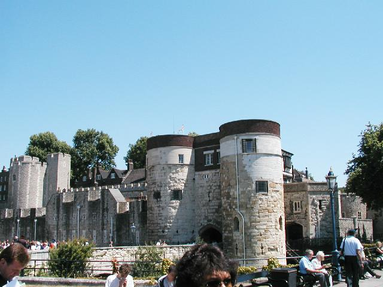
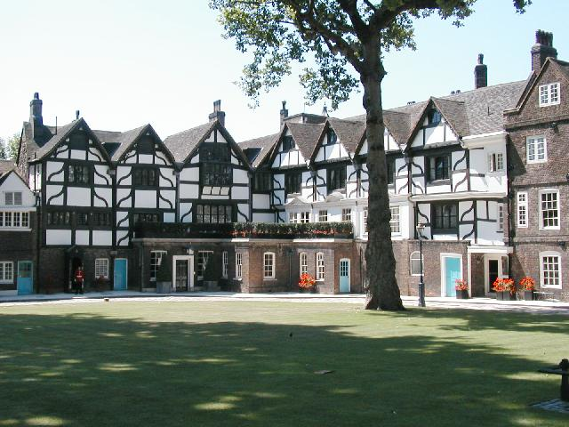
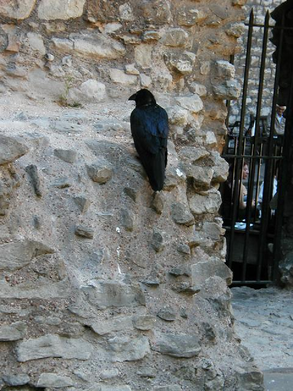
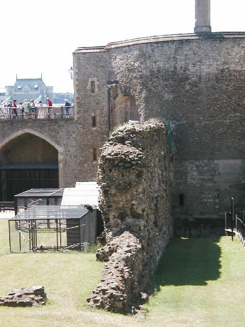
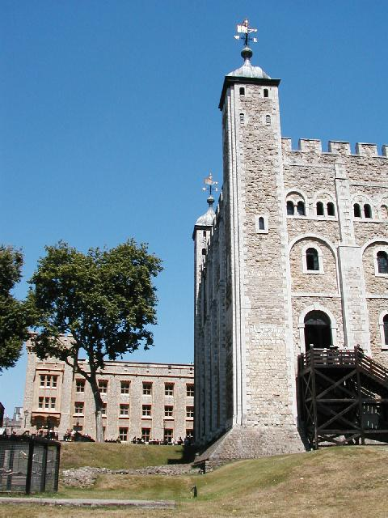
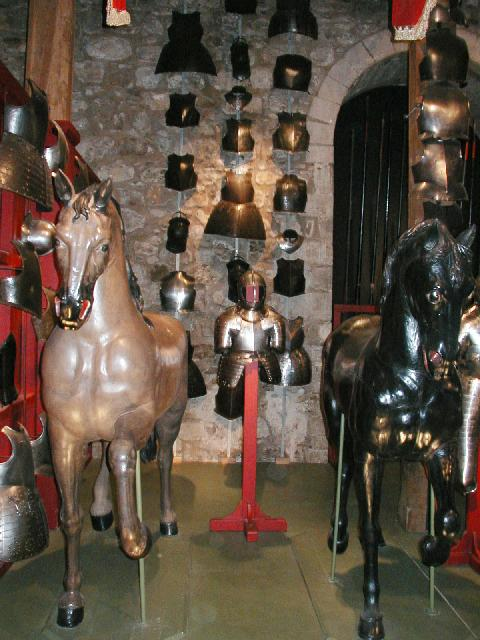
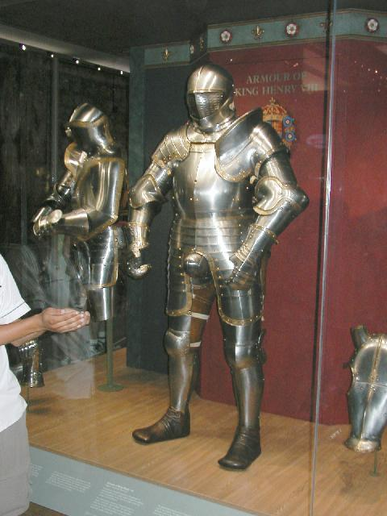
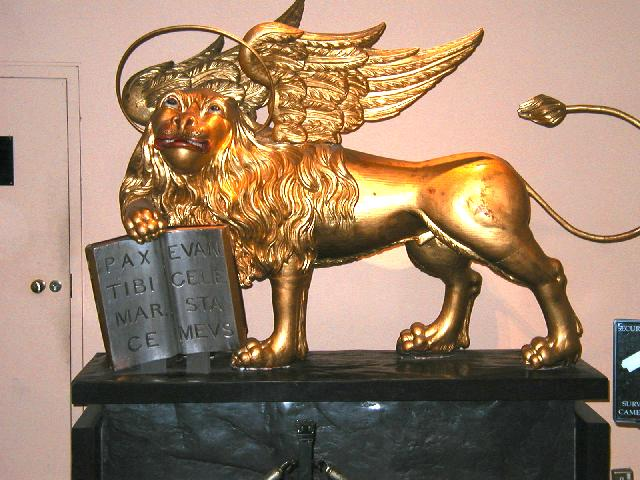
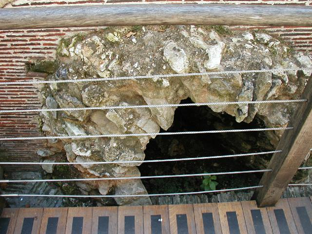
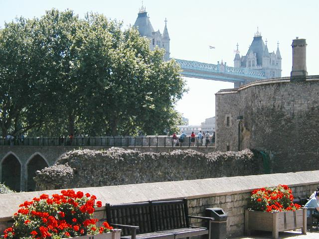

The Tower
The Tower was a homecoming. Here is the locus temporalis
of all "fantasies": Martin's ravens, Jordan's White Tower, the Sword of Spiritual
Justice and other named swords, the dungeons, armories and treasuries.
I found even the culvert that Orcs might crawl through. Immediately at home,
I didn't want to leave.

Two young princes were murdered here. Their
bodies were found in an excavation centuries later;
hence the Bloody Tower.

The Queen's Court. The Queen stayed here when
in residence. It was an honor to be beheaded here instead of on Tower
Hill in front of a crowd. The yeoman tried to get us to cheer as we would
have at the last beheading, a Scots nobleman during the second Jacobite rebellion.
He chose one woman who was silent, and asked her were she was from. "Scotland"
was the frigid reply.

One of seven ravens in residence.
The Tower will fall and the kingdom suffer disaster if they leave.
The Yeomen keep their wings clipped to preserve their jobs.

Raven cage beside one of the original walls of William
the Conqueror's castle.

The White Tower
I truely didn't know that there was a prototype for Jordan's White Tower
until I saw it.

William the Conqueror's armor
Suitable for an eight year old today.

Henry the VIII's Armor
Would actually fit me. Much too small in the crotch though.

Lion of Mark taken from Corfu in 1801
They don't let you photograph the crown jewels, bye the bye.
There's a peoplemover in front of them to keep onefrom lingering. I found the
jewels a bit fussy--all those clouds of diamonds. If I were King, I'd
have something simpler.

Culvert to the Thames.
Traitor's Gate opens onto the Thames. It was originally
called Watergate(!). It was found less complicated to take traitors in by boat
than through the city.

View of Tower Bridge from the Tower